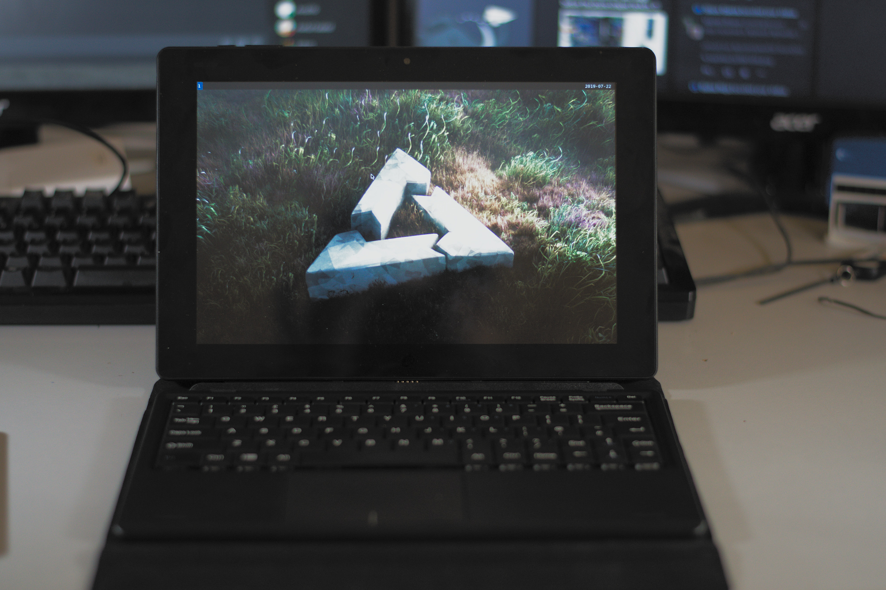
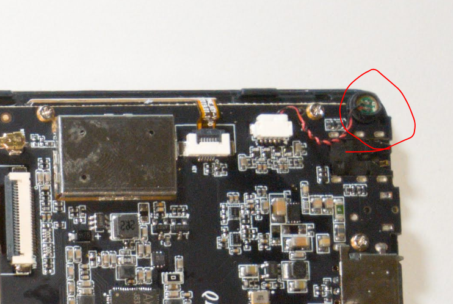

PINE64 PineTab (pine64-pinetab)
|

The PineTab running Sway (old prototype device) |
|
| Manufacturer | PINE64 |
|---|---|
| Name | PineTab |
| Codename | pine64-pinetab |
| Released | 2019 |
| Category | community |
| Original software | Ubuntu Touch |
| postmarketOS kernel | 5.9.x |
| Hardware | |
| Chipset | Allwinner A64 |
| CPU | 4x 1152 MHz Cortex-A53 |
| GPU | Mali-400 MP2 |
| Display | 800x1280 IPS |
| Memory | 2 GB |
| Architecture | aarch64 |
| Non-Android based device | ✔ |
| Unixbench Whet/Dhry score | 1056.1 |
{kind=link}
| USB Networking |
Works
|
|---|---|
| Flashing |
Unavailable
|
| Touchscreen |
Works
|
| Display |
Works
|
| WiFi |
Works
|
| FDE |
Works
|
| Mainline |
Works
|
| Battery |
Works
|
| 3D Acceleration |
Works
|
| Audio |
Works
|
| Bluetooth |
Works
|
| Camera |
Works
|
| GPS |
Unavailable
|
| Mobile data |
Unavailable
|
| SMS |
Unavailable
|
| Calls |
Unavailable
|
| USB OTG |
Works
|
| NFC |
Unavailable
|
| Accelerometer |
Works
|
|---|---|
| Magnetometer |
|
| Ambient Light |
|
| Proximity |
|
| Hall Effect |
|
| Barometer |
|
| Power Sensor |
|
| Keyboard |
|
|---|---|
| Touchpad |
|
| USB-A |
|
| HDMI/DP |
|
| Ir TX |
|
| TrustZone |
|
| FOSS bootloader |
|
Contributors
Users owning this device
- Alexeymin ( Notes: Engineering sample, only 1Gb RAM, bad connection to keyboard pogo pins)
- Brutuss
- Danct12
- Drebrez
- DylanVanAssche ( Notes: Engineering sample with 2GB RAM, no keyboard)
- MartijnBraam ( Notes: Engineering sample, only 1Gb RAM, bad connection to keyboard pogo pins)
- Z3ntu
Installation
The PineTab will boot from a bootable microSD card if it is plugged, and fall back to booting from internal eMMC. You can install postmarketOS on either of them (or even on both).
From pre-built image (easy method)
Official images of postmarketOS are built at least every week. There are several images to choose from, so read the following to help you navigate through the downloads page.
Download the right image
- Choose an image for your device from the download page.
-
User interface
- Phosh : Purism's GTK based phone interface (This is what we shipped with the postmarketOS community edition.)
- Plasma Mobile : KDE's Plasma based phone interface.
- Pick the latest image by its date
-
Choose the regular image, or the installer image
-
Graphical Installer:
-
Ends in
-installer.img.xz - Recommended for a proper installation.
- Allows to install postmarketOS to the microSD card or to internal memory (eMMC)
- Encrypting your installation is possible
- Passwords for user and SSH are set during installation (and SSH can be disabled)
-
Ends in
-
Regular image:
-
Ends in
.img.xz - Like a live CD, flash it to your microSD card to try postmarketOS out.
-
The login is
userwith password147147
-
Ends in
-
Graphical Installer:
Flash to microSD card
After downloading the image, figure out the name of the microSD card. Run
lsblk
once, then insert the microSD card and run
lsblk
again. The microSD card is the newly appeared device, and you can take a look at the reported size to be extra sure. You should really double check that you pick the right device, otherwise you can overwrite the wrong disk by accident. Flash the image as shown below, replace
/dev/mmcblk...
with the device name of your microSD card.
$ cd ~/Downloads
$ xzcat 20210203-2229-postmarketOS-edge-plasma-mobile-3.3-pine64-pinetab-allwinner-installer.img.xz | sudo dd of=/dev/mmcblk... status=progress bs=1M
When you are done, insert the microSD into your PineTab and boot it up.
With pmbootstrap (advanced)
- Install pmbootstrap
-
Run
pmbootstrap init. As of writing, the PineTab is only available in theedgechannel, so select that when asked. - Insert SD card into your PC
-
Use
lsblkto figure out the path to the SD card device (e.g./dev/mmcblk0) -
Run
pmbootstrap install --sdcard=/path/to/sdcard. Add--fdeif you want to encrypt your installation. Add--ondevif you want to create on-device installer image.
Serial console
The PineTab has a serial port in the headphone connector, it's activated by a switch behind the SD card cover. If the switch is pointed toward the SD card the headphone connector is in audio mode, if it's pointed the other way it's in UART mode.
The uart is 115200n8
The pinout for the serial connector on the tablet side is:
- Tip: RX
- Ring: TX
- Sleeve: GND
The serial connection is 3.3V
You can also buy the debug cable from PINE64 Store .
Components
| Component | Model | Driver |
|---|---|---|
| Touchscreen | Goodix GT9271 | TOUCHSCREEN_GOODIX |
| Rear camera | OmniVision OV5640 | VIDEO_OV5640 |
| Front camera | GalaxyCore GC2145 | Nope |
| LCD | Feixin K101 IM2BA02 | DRM_PANEL_FEIXIN_K101_IM2BA02 |
| WiFi | Realtek RTL8723CS | RTL8723CS |
| Bluetooth | Realtek RTL8723CS | BT_HCIUART_RTL |
| Accelerometer | Bosch BMA223 | BMC150_ACCEL_I2C |
| Volume buttons | Buttons connected to the KEYADC | KEYBOARD_SUN4I_LRADC |
| Power button | X-Powers AXP803 | INPUT_AXP20X_PEK |
| Battery fuel gauge | X-Powers AXP803 | BATTERY_AXP20X |
Touchscreen
The touchscreen on the PineTab is controlled by
goodix
module on i2c-0, at address 0x5d.
Cameras
Both front and back camera shares the same csi-0 bus. Currently only the back camera (OV5640) has mainline support.
It's not clear what would it reacts to both front and back camera. More information needed on this.
Since Cerdus is at
/dev/video0
, the CSI is at
/dev/video1
and can be controlled with
/dev/media1
using
media-ctl
pine-pinetab:~# media-ctl --set-v4l2 '"ov5640 2-003c":0[fmt:UYVY8_2X8/1280x720]' -d /dev/media1
pine-pinetab:~# ffmpeg -s 1280x720 -f video4linux2 -i /dev/video1 -vframes 1 selfie.jpg
{kind=link}
Wi-Fi
Wi-Fi works using the RTL8723CS driver from Icenowy , loads and connect to a Wi-Fi perfectly fine. However power saving capabilities aren't working, so the PineTab battery will drain more quicker.
Bluetooth
Bluetooth also works on this device after installing
firmware-rtl8723bt
, there is a patch series on LKML.
Accelerometer
The accelerometer driver is for BMA250 on mainline, and works just fine. The accelerometer value could be get here:
pine-pinetab:~$ cat /sys/bus/iio/devices/iio\:device1/name
BMA222E
pine-pinetab:~$ cat /sys/bus/iio/devices/iio\:device1/in_accel_x_raw
-1
pine-pinetab:~$ cat /sys/bus/iio/devices/iio\:device1/in_accel_y_raw
28
pine-pinetab:~$ cat /sys/bus/iio/devices/iio\:device1/in_accel_z_raw
-12
Audio
Speakers
Sound output should work after unmuting
AIF1 Slot 0 digital
and
DAC
. However Danct12's unit had it's speakers broken so this hasn't tested on him, but confirmed working on others.
The Speaker output is named "Line Out"
Headphone Jack
Thankfully our device still has the headphone jack, so you could still listen to "The Beatles", right?
Well, sure. Headphones should work after unmuting
Headphone
and
AIF1 Slot 0 digital
.
Microphone
Microphone can be enabled by toggle capture and unmute "AIF1 Data Digital Audio", "Mic1", "Mic2".
The microphone can be found here: 
{kind=link}
RAM
Changing the Clock Frequency
See the PinePhone article .
See also
- pmaports!528 Initial merge request
- https://lore.kernel.org/lkml/20200110155225.1051749-1-icenowy@aosc.io/ Mainline Linux support MR